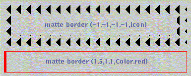

Conceptos avanzados de AWT y Swing
Una vez vista una introducción a lo que las librerías AWT y Swing pueden ofrecernos para construir aplicaciones gráficas, en este tema veremos algunos conceptos avanzados que nos ofrece la librería Swing.
Comenzaremos dando una breve introducción a otro tipo de aplicaciones que podemos construir con AWT y Swing, que son los applets. Después, veremos algunas características adicionales que podemos utilizar con Swing a la hora de elaborar nuestras aplicaciones gráficas.
Applets y seguridad
Applets
Los ejemplos de aplicaciones gráficas vistos hasta ahora son propiamente aplicaciones, puesto que son instancias de la clase Frame o JFrame, y por tanto son ventanas que pueden ejecutarse independientemente.
Un applet es una aplicación normalmente corta (aunque no hay límite de tamaño), cuya principal funcionalidad es ser accesible a un servidor Internet (una aplicación que pueda visualizarse desde un navegador).
La forma de definir un applet es muy similar a la definición de una aplicación, salvo por algunas diferencias:
- No se hereda de Frame o JFrame, sino de Applet (clase java.applet.Applet) o JApplet
- No hay constructor, en su lugar hay un método init() que veremos a continuación
- No hay método main(), puesto que el applet no puede autoejecutarse. Lo que se ejecuta es la página HTML para ver el applet en el navegador.
El programa appletviewer es un navegador mínimo distribuido con JDK, que espera como argumento un fichero HTML, que contendrá una marca indicando el código que cargará el appletviewer:
appletviewer <fichero HTML>
El código necesario para poder cargar un applet en una página HTML es:
<HTML> <BODY> ... <APPLET CODE = nombre_prog.class WIDTH = 300 HEIGHT = 100> </APPLET> ... </BODY> </HTML>
Donde se indican el fichero .class compilado del applet, la anchura y altura. Este código se coloca en un fichero HTML y puede verse desde cualquier navegador que soporte Java, o con el programa appletviewer.
También podemos utilizar la etiqueta OBJECT en lugar de APPLET, ya que esta última está desaconsejada:
<HTML> <BODY> ... <OBJECT codetype="application/java" classid = "java:nombre_prog.class" WIDTH = 300 HEIGHT = 100> </OBJECT> ... </BODY> </HTML>
La clase Applet tiene unos métodos predefinidos para controlar los applets, y que componen el ciclo de vida del applet:
- init ( ): este método se llama cada vez que el appletviewer carga por primera vez la clase. En él deben inicializarse las características del applet que se quieran (tamaño, imágenes, controles, valores de variables, etc).
- start ( ): llamada para arrancar el applet cada vez que es visitado. Normalmente no es necesario redefinir este método. Por ejemplo, podría hacer falta redefinirlo si el applet está haciendo una animación, para detenerla si no tiene sentido hacerla cuando el usuario no la está viendo.
- stop ( ): llamada para detener la ejecución del applet. Se llama cuando el applet desaparece de la pantalla. Al igual que lo anterior, normalmente no es necesario redefinir este método.
- destroy ( ): se llama cuando ya no se va a usar más el applet, y hay que liberar los recursos dispuestos por el mismo.
Applets Swing
La única diferencia entre los applets construidos en AWT y los construidos con Swing es que éstos heredan de la clase JApplet en lugar de la clase Applet. Pero se tiene el inconveniente de que actualmente sólo la utilidad appletviewer está preparada para ejecutar applets de Swing con Java 1.2 o posteriores. Para el resto de navegadores deberemos contar con el Java Plug-in 1.1.1, que contiene la versión 1.0.3 de Swing . El resto de la estructura de los applets es la misma que para AWT.
Ejemplo: Vemos uno de los ejemplos anteriores convertido en applet.
Vemos aquí el código:
import java.awt.*;
import java.applet.*;
import java.awt.event.*;
/**
* Este es un ejemplo de applet similar al ejemplo de AWT del contador
* Se modifica un contador bien pulsando un boton,
* bien modificando el valor a mano, bien mediante un desplegable
*/
public class EjemploApplet extends Applet
{
// Contador a modificar
TextField txtCont;
/**
* Inicializa el applet
*/
public void init()
{
setLayout(new BorderLayout());
// ****** Panel con el contador ******
Panel panelCont = new Panel();
final Label lblCont = new Label("Contador:");
lblCont.addMouseListener(new MouseAdapter()
{
// Al entrar en la etiqueta hacemos que cambie su texto
public void mouseEntered(MouseEvent e)
{
lblCont.setText("En etiqueta!");
}
public void mouseExited(MouseEvent e)
{
lblCont.setText("Contador:");
}
});
txtCont = new TextField("0");
panelCont.add(lblCont);
panelCont.add(txtCont);
// ****** Panel para el boton ******
Panel panelBoton = new Panel();
Label lblBoton = new Label("Incrementar Contador:");
Button btn = new Button("Incrementar");
btn.addActionListener(new ActionListener()
{
// Al pulsar el boton incrementamos en 1 el contador
public void actionPerformed(ActionEvent e)
{
txtCont.setText("" + (Integer.parseInt(txtCont.getText()) + 1));
}
});
panelBoton.add(lblBoton);
panelBoton.add(btn);
// ****** Panel para el desplegable ******
Panel panelChoice = new Panel();
Label lblChoice = new Label("Establecer Contador:");
final Choice ch = new Choice();
for (int i = 0; i < 10; i++)
ch.addItem("" + i);
ch.addItemListener(new ItemListener()
{
// Al elegir una opcion, se asigna ese valor al contador
public void itemStateChanged(ItemEvent e)
{
txtCont.setText(ch.getSelectedItem());
}
});
panelChoice.add(lblChoice);
panelChoice.add(ch);
// Colocamos los paneles
add(panelCont, "South");
add(panelBoton, "West");
add(panelChoice, "East");
}
/**
* Pinta el applet
*/
public void paint (Graphics g)
{
}
}
y aquí la página HTML con el applet:
<HTML> <BODY> <APPLET CODE="EjemploApplet.class" WIDTH="500" HEIGHT="100"> </APPLET> </BODY> </HTML>
Algunas notas acerca de seguridad
Java realiza un importante control de seguridad en los programas, que impide que programas escritos en dicho lenguaje puedan dañar nuestra información (virus), accedan a información privada, o realicen cualquier otra actividad dañina.
Básicamente, la seguridad gira en torno a programas externos que se ejecuten en nuestra máquina, es decir, Applets. En principio, en JDK 1.0 Java únicamente aplicaba una serie de restricciones de seguridad sobre los Applets. Proporcionaba a estos programas un acceso restringido a los recursos de nuestro sistema. En JDK 1.1 se incorporan los llamados Applets firmados. En los Applets que tengan una firma de confianza, se relajarán las restricciones de seguridad, según las necesidades del Applet en cuestión. Esto permitirá incorporar más capacidades a los Applets, que podrán ser utilizadas siempre que el usuario confíe en la firma y acepte otorgar al Applet los permisos que solicita. En JDK 1.2 se producen grandes cambios en el sistema de seguridad. Ahora ya no sólo se aplican las restricciones de seguridad a código remoto, sino que pueden ser aplicadas a cualquier programa Java, ya sea local o remoto. Las clases Java se organizan en una serie de dominios, de forma que cada dominio tiene una serie de permisos propios. Uno de estos dominios serán los Applets, que tendrán una serie de restricciones de seguridad como en versiones anteriores. Las aplicaciones por defecto no tienen restricciones, pero podemos ponérselas.
Restricciones de seguridad en Applets
Si dejásemos que un Applet accediese a todos los recursos de nuestra máquina podría ser muy peligroso, ya que cualquiera simplemente colgando un Applet en su página podría tener libertad para hacer casi cualquier cosa dentro de los ordenadores de todo aquel que visite la web. Por esto los Applets cuentan con una serie de restricciones importantes:
- No pueden acceder a métodos nativos.
- No pueden leer ni escribir en ficheros de la máquina local donde se ejecute. Sólo puede acceder a ficheros si proporciona la URL absoluta del fichero.
- No pueden establecer conexiones de red a ningún host distinto al host desde el que nos hemos descargado el Applet.
- No pueden ejecutar programas en la máquina donde se está ejecutando.
- No pueden leer las propiedades del sistema.
- Las ventanas que muestran los Applets tienen una apariencia distinta a las ventanas del sistema operativo.
Podremos cambiar la configuración de forma que se eliminen algunas de estas restricciones, estableciendo los permisos necesarios para ello. De la misma forma, aunque las aplicaciones no tengan por defecto estas restricciones de seguridad, podremos hacer que también se vean sujetas a ellas.
Ficheros de políticas de seguridad
Los ficheros de política (policy) establecen la políticas de seguridad (permisos) que se llevarán a cabo en los programas Java que utilicemos. Estos ficheros son ficheros de texto que pueden ser editados con cualquier editor ASCII o bien con la herramienta incluida en la distribución de JDK para tal fin: Policy Tool.
Para ejecutar la aplicación Policy Tool deberemos introducir en la línea de comando:
policytool
Desde esta aplicación podremos crear ficheros de políticas, que luego podremos emplear para imponerlos sobre determinadas aplicaciones.
Asociación de ficheros de políticas con aplicaciones o applets
Cuando se ejecuta una aplicación o Applet con un manejador de seguridad, los ficheros de políticas que se cargan son los definidos en el fichero de propiedades de seguridad que se encuentra en el directorio {java.home}/lib/security/java.security.
Para utilizar el fichero de políticas que hayamos definido, podemos optar bien por añadirlo a este fichero de propiedades de seguridad, o bien añadirlo como propiedad del sistema el ejecutar el intérprete Java, utilizando para ello el siguiente parámetro:
appletviewer -J-Djava.security.policy=mipolitica MiApplet
De esta manera estamos forzando a que se utilice la política definida en el fichero mipolitica.
En una aplicación Java por defecto no se instala ningún gestor de seguridad. Si queremos imponer restricciones de seguridad podemos forzar que se cargue un gestor de seguridad por defecto llamando al interprete con el parámetro:
java -Djava.security.manager MiAplicacion
Podemos además especificar el fichero de políticas que queremos que utilice el gestor de seguridad cargado, esto lo haremos de la siguiente forma:
java -Djava.security.manager -Djava.security.policy=mipolitica MiAplicacion
Gestores de seguridad
El gestor de seguridad (SecurityManager) será el objeto encargado de determinar si cierta operación es permitida o no, impidiendo su realización en tal caso. Cuando una aplicación carga un gestor de seguridad todas las acciones que vaya a realizar sujetas a posibles restricciones de seguridad se comprobarán en dicho gestor antes de ser realizadas.
En el caso de los Applets es el navegador el encargado de instalar en ellos el gestor de seguridad por defecto, por lo que siempre estarán sujetos a restricciones de seguridad.
En las aplicaciones independientes no se carga por defecto ningún gestor de seguridad, pero podremos hacer que se cargue bien indicándolo en la línea de comando como hemos visto en el punto anterior, o bien desde el mismo código de nuestra aplicación.
El gestor de seguridad por defecto (clase SecurityManager) será el gestor que carguen los Applets, o las aplicaciones cuando lo especifiquemos en la línea de comando. Este gestor de seguridad seguirá la política de seguridad indicada en los ficheros de políticas que hayamos especificado (tanto en el fichero de propiedades de seguridad como en la línea de comandos).
Además, podemos crear nuestro propio gestor de seguridad, heredando de SecurityManager y redefiniendo los métodos que consideremos necesarios (se tienen varios métodos checkXXXX(...) que comprueban varias tareas diferentes). Podemos establecer y obtener el gestor actualmente instalado con los métodos setSecurityManager(...) y getSecurityManager(...) de la clase System, respectivamente, aunque sólo podremos establecer un gestor de seguridad para los programas que no tengan uno ya establecido. Esto se hace para evitar que se pueda alterar el gestor asignado a un Applet, por ejemplo.
Conceptos avanzados de Swing
Además de lo visto anteriormente, Swing ofrece otras posibilidades propias, que no tiene AWT. Algunas de ellas son:
- Uso de acciones, objetos Action que coordinan tareas realizadas por distintos elementos.
- Incorporación de funciones de accesibilidad, que permitan que las personas con algún tipo de discapacidad o minusvalía puedan utilizar perfectamente los programas Swing.
- Uso de bordes, elementos que bordean los controles y ofrecen un mejor aspecto visual a la aplicación.
- Uso de iconos: algunos componentes permiten que se les indique un icono a mostrar, mediante la clase ImageIcon.
- Uso de la apariencia (look and feel): podemos indicar qué aspecto queremos que tenga la aplicación: específico de Windows, de Motif, etc.
- Uso de hilos para gestionar eventos: algunos eventos pueden bloquear componentes durante mucho tiempo, y es mejor separar el tratamiento del evento en un hilo para liberar el componente. Sin embargo, si dejamos que dicho hilo se ejecute libremente, e interactúa con controles de la aplicación, se pueden producir inconsistencias. Para evitar eso, Swing permite ejecutar hilos adecuadamente, en consonancia con el resto de la aplicación gráfica.
- Uso de temporizadores: con la clase Timer podemos definir acciones que queremos ejecutar en un momento determinado o con una periodicidad determinada.
A continuación veremos con algo más de detalle algunas de estas características
Coordinación de acciones: Action
Si en una aplicación Swing tenemos dos componentes que realizan el mismo evento de acción, quizá nos convenga utilizar un objeto Action para realizar dicha tarea. Estos objetos son ActionListeners que centralizan y coordinan un disparo del evento que pueda venir de varias fuentes.
Por ejemplo, imaginemos que queremos copiar el contenido de un cuadro de texto en otro, y queremos copiarlo tanto si pulsamos Intro sobre el cuadro de texto, como si pulsamos sobre un botón Copiar de la aplicación. Por una parte, definimos los controles: el cuadro de texto desde donde copiar, el cuadro de texto donde copiar, y el botón:
JTextField txt = new JTextField();
JTextField txtRes = new JTextField();
JButton btn = new JButton("Copiar");
Por otra parte definimos el objeto de tipo Action. Hay que tener en cuenta que Action es una interfaz. Hay una clase abstracta llamada AbstractAction (también dentro de javax.swing) que implementa dicha interfaz. Así que para crear el Action crearemos una clase que herede de esta (para implementar ya los métodos de Action), y redefinimos el método actionPerformed(...) que se ejecutará cuando se dispare el evento, bien por el cuadro de texto, bien por el botón:
class MiAction extends AbstractAction
{
public MiAction()
{
}
public void actionPerformed(ActionEvent e)
{
txtRes.setText(txt.getText());
}
}
El evento simplemente copia el texto de un cuadro a otro. Una vez definida la acción, la asociamos a los controles como un ActionListener más:
MiAction ac = new MiAction(); txt.addActionListener(ac); btn.addActionListener(ac);
Ejemplo: un ejemplo de lo explicado en este apartado:
import javax.swing.*;
import java.awt.*;
import java.awt.event.*;
public class EjemploAction extends JFrame
{
// Cuadro de texto
JTextField txt;
// Boton
JButton btn;
// Cuadro de texto resultado
JTextField txtRes;
// Constructor
public EjemploAction()
{
getContentPane().setSize(200, 200);
Action ac = new MiAction();
txt = new JTextField();
btn = new JButton("Copiar");
txtRes = new JTextField();
txt.addActionListener(ac);
btn.addActionListener(ac);
add(txt, BorderLayout.NORTH);
add(btn, BorderLayout.CENTER);
add(txtRes, BorderLayout.SOUTH);
}
// Funcion principal
public static void main (String[] args)
{
EjemploAction ea = new EjemploAction();
ea.addWindowListener(new WindowAdapter()
{
public void windowClosing(WindowEvent e)
{
System.exit(0);
}
});
ea.pack();
ea.show();
}
// Clase que implementa la accion
class MiAction extends AbstractAction
{
// Constructor
public MiAction()
{
}
// Evento de disparo de accion
public void actionPerformed(ActionEvent e)
{
txtRes.setText(txt.getText());
}
}
}
Teclas de método abreviado
También podemos hacer que al pulsar una tecla sobre un componente se ejecute una acción. Para ello lo que hacemos es:
- Mapear en el componente cada tecla de método abreviado con un nombre de acción
- Mapear el nombre de acción con un objeto de tipo Action que desarrolle la acción en concreto.
Por ejemplo, si queremos que al pulsar F1 sobre un JPanel nos aparezca un mensaje de ayuda, haríamos algo como lo siguiente:
JPanel p = new JPanel();
MiObjetoAction moa = new MiObjetoAction();
...
p.getInputMap().put(KeyStroke.getKeyStroke("F1"), "accion1");
p.getActionMap().put("accion1", moa);
Primero utilizamos getInputMap(...) para mapear la entrada de teclado con un nombre de acción (en este caso, la pulsación de la tecla F1 con la acción que llamamos accion1). Para comparar pulsaciones de teclas utilizamos la clase KeyStroke y su método getKeyStroke. Después con getActionMap asociamos el nombre de acción anterior (accion1) con un objeto Action que internamente hará la acción que queramos (en este caso, mostrar la ayuda). En el ejemplo se supone que la clase MiObjetoAction se encarga de hacer esa tarea, aunque no se muestre.
El método getInputMap acepta un parámetro entero para indicar cuándo queremos que se dispare el evento: si cuando tenga el foco el componente, o el contenedor que lo contiene, o la ventana que lo contiene.
Uso de bordes
Podemos definir qué bordes queremos que tenga cualquier subtipo de JComponent, aunque en general, para controles diferentes a un JPanel o JLabel Sun advierte que puede que no se representen bien dichos bordes. En esos casos, se puede colocar el componente dentro de un JPanel, y asignar el borde al JPanel.
Para colocar un borde en un componente utilizamos el método setBorder(...) del componente. Dicho método acepta un parámetro de tipo Border, que es una interfaz. Para indicar qué tipo de borde queremos como parámetro, podemos utilizar la clase javax.swing.BorderFactory, y crear uno de los subtipos de bordes que permiten sus métodos. Aquí mostramos gráficamente algunos de ellos:

Por ejemplo, si queremos añadir un borde de línea rojo a un panel, pondríamos:
JPanel p = new JPanel(); p.setBorder(BorderFactory.createLineBorder(Color.red));
Además de la gran cantidad de bordes disponibles, también podemos definirnos nuestros propios bordes, creando una subclase de AbstractBorder, y definiendo los métodos necesarios.
Transferencia de datos
Podemos transferir información entre controles de una misma aplicación, y también entre aplicaciones Java distintas, e incluso entre aplicaciones Java y programas nativos. Para transferir esta información podemos:
- Arrastrar y soltar (drag & drop) la información a transferir de un lugar a otro
- Copiar/Cortar y pegar la información de un lugar a otro.
Algunos controles Swing nos permiten realizar estas tareas en ellos (consultar el tutorial de Sun sobre Swing para más información). Por ejemplo, podemos sacar elementos de una lista (JList) y colocarlos en un cuadro de texto (JTextField).
Si queremos arrastrar (drag) elementos de un control de Swing que permita arrastre, tenemos que llamar a su método setDragEnabled(...) pasándole como parámetro true para habilitar el arrastre. Para el resto de operaciones (soltar, copiar, cortar y pegar), no es necesario habilitar nada más.
Volviendo al ejemplo propuesto, imaginemos que queremos colocar en un cuadro de texto el elemento que seleccionemos de una lista, arrastrando y soltando. En este caso, primero definimos el cuadro de texto y la lista:
JTextField txt = new JTextField();
DefaultListModel dlm = new DefaultListModel();
dlm.addElement("Elemento 1");
dlm.addElement("Elemento 2");
JList lst = new JList(dlm);
Y después habilitamos el arrastre en la lista:
lst.setDragEnabled(true);
Ejemplo: un ejemplo de lo explicado en este apartado:
import javax.swing.*;
import java.awt.*;
import java.awt.event.*;
public class EjemploDrop extends JFrame
{
// Cuadro de texto
JTextField txt;
// Lista
JList lst;
// Constructor
public EjemploDrop()
{
getContentPane().setSize(200, 200);
txt = new JTextField();
DefaultListModel dlm = new DefaultListModel();
dlm.addElement("Elemento 1");
dlm.addElement("Elemento 2");
lst = new JList(dlm);
lst.setDragEnabled(true);
add(txt, BorderLayout.NORTH);
add(lst, BorderLayout.CENTER);
}
// Funcion principal
public static void main (String[] args)
{
EjemploDrop ed = new EjemploDrop();
ed.addWindowListener(new WindowAdapter()
{
public void windowClosing(WindowEvent e)
{
System.exit(0);
}
});
ed.pack();
ed.show();
}
}
Uso de iconos
Algunos controles Swing como JLabel, JButton o JTabbedPane permiten enriquecer su apariencia añadiendo iconos en ellos, utilizando la interfaz Icon. Para utilizarla, se proporciona una implementación de la misma en la clase ImageIcon, que permite cargar iconos desde imágenes JPG, GIF o PNG. Normalmente se utiliza esta clase para crear iconos.
Por ejemplo, si queremos crear una etiqueta con un icono de un fichero GIF determinado, creamos la etiqueta con un constructor donde indicamos el texto de la etiqueta, su icono y la alineación horizontal:
JLabel lbl = new JLabel("Nombre", new ImageIcon("icono.gif"), SwingConstants.CENTER);
Temporizadores
Un temporizador (javax.swing.Timer) es un objeto que permite indicar cuándo queremos disparar un evento de acción, y si queremos dispararlo repetidas veces o sólo una vez. Se suele utilizar para tareas que se deben ejecutar en momentos puntuales, independientemente del flujo del programa.
Para definir temporizadores, utilizamos el constructor de Timer al que se le pasan dos parámetros:
- El tiempo en ms desde que se lanza el Timer hasta que se disparará
- Un objeto de tipo ActionListener que contendrá el método actionPerformed(...) que se disparará cuando pase el tiempo indicado.
Por ejemplo, el siguiente Timer Saca un mensaje por un cuadro de texto 1 segundo después de crearse:
Timer t = new Timer(1000, new ActionListener()
{
public void actionPerformed(ActionEvent e)
{
txt.setText("Hola");
}
});
t.start();
Cuando llamamos al método start() del Timer, éste se activa, y pasado un segundo desde la activación, mostrará el mensaje de texto por un cuadro de texto txt que se supone creado previamente.
Por defecto, los Timers ejecutan su tarea periódicamente (en el ejemplo anterior, cada segundo sacaría el mensaje). Si sólo queremos hacerlo una vez, llamamos al método setRepeats(...) del Timer pasándole como parámetro false.
... t.setRepeats(false); t.start();
Ejemplo: Vemos un ejemplo de uso de iconos y temporizadores. Se muestra una etiqueta con un icono de un reloj, y por otro lado un temporizador actualiza cada segundo el valor de un contador que se muestra en otra etiqueta:
import java.awt.*;
import javax.swing.*;
import java.awt.event.*;
/**
* Este ejemplo muestra algunas caracteristicas adicionales de Swing
* como son el uso de iconos, y de timers (para un segundero)
*/
public class EjemploSwing2 extends JFrame
{
// Etiqueta con el contador
JLabel lblCont;
/**
* Constructor
*/
public EjemploSwing2()
{
setSize(300, 200);
getContentPane().setLayout(new GridLayout(1, 2));
// Etiqueta con icono
JLabel lblEtiq = new JLabel("Contador:", new ImageIcon("clock.gif"), SwingConstants.CENTER);
// Etiqueta para los segundos
lblCont = new JLabel("0");
// Timer: cada segundo incrementa el contador
Timer t = new Timer(1000, new ActionListener()
{
public void actionPerformed(ActionEvent e)
{
lblCont.setText("" + (Integer.parseInt(lblCont.getText()) + 1));
}
});
t.setRepeats(true);
t.start();
add(lblEtiq);
add(lblCont);
// Evento para cerrar la ventana
addWindowListener(new WindowAdapter()
{
public void windowClosing (WindowEvent e)
{
System.exit(0);
}
});
}
/**
* Main
*/
public static void main (String[] args)
{
EjemploSwing2 e = new EjemploSwing2();
e.show();
}
}
Como icono se emplea esta imagen:
Apariencia
Como se ha comentado, la apariencia de un programa Java no se limita al sistema operativo en el que estemos, sino que podemos hacer que nuestro programa tenga apariencia Windows, Linux, y cualquier otra apariencia de la que podamos disponer.
Para cambiar la apariencia tenemos la clase UIManager, y su método setLookAndFeel(...). Por ejemplo, si queremos hacer que nuestro programa tenga la apariencia propia de Java, haremos algo como:
public static void main(String[] args)
{
...
try
{
UIManager.setLookAndFeel(UIManager.getCrossPlatformLookAndFeelClassName());
} catch (Exception ex) { ... }
}
La llamada a este método puede provocar una excepción, si la clase de look and feel que queremos cargar no se encuentra.
Si disponemos de algún tipo de apariencia que nos hayamos descargado (normalmente se descargan en ficheros JAR que hay que incluir en el CLASSPATH), la añadimos pasándole como parámetro el nombre completo de la apariencia. Por ejemplo, así se cargaría una apariencia de Linux GTK, o una de Windows, respectivamente:
UIManager.setLookAndFeel("com.sun.java.swing.plaf.gtk.GTKLookAndFeel");
UIManager.setLookAndFeel("com.sun.java.swing.plaf.windows.WindowsLookAndFeel");
Hilos y Swing
Se debe tener cuidado a la hora de utilizar hilos en programas Swing. En general, una vez que se crea un componente, sólo se puede acceder a él (para obtener datos o modificarlos) desde el código de los eventos que tenga asociados (lo que se llama event-dispatching thread). En caso contrario, podrían provocarse inconsistencias que ocasionaran que el programa no funcionara correctamente.
Por esta razón, cuando necesitamos acceder a un componente desde fuera del código del evento, podemos optar por varias alternativas:
-
Si queremos actualizar un componente, podemos utilizar los métodos invokeLater() o invokeAndWait() de la clase javax.swing.SwingUtilities. En ambos casos, se pasa como parámetro el objeto hilo que queremos ejecutar:
Thread t = new Thread(...); ... SwingUtilities.invokeLater(t); SwingUtilities.invokeAndWait(t);
La diferencia entre uno y otro método es que invokeLater() devuelve el control inmediatamente al programa principal para que siga ejecutando (y lanzará el hilo cuando pueda), e invokeAndWait() detiene el programa principal hasta que se pueda lanzar el hilo. Se recomienda en la medida de lo posible utilizar el primero de ellos. El método run() del hilo deberá tener todo el acceso a los componentes que se requiera.
-
Si queremos actualizar un componente en un instante determinado, o cada cierto tiempo, podemos usar los Timers vistos anteriormente, de forma que el actionPerformed(...) del Timer tendrá el código que acceda a los componentes.